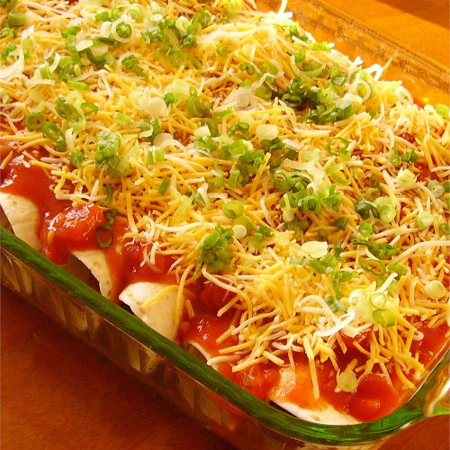

Cheese and Beef Enchiladas

Description
Want an alternative to Taco Tuesday? Warm up these delicious cheesy beef enchiladas. It is perfect for winter!
Ingredients
- ¾ pound lean ground beef
- 1 ½ cups diced red or green capcisum
- 1 (1.25 oz) package taco seasoning
- 8 (7 inch) flour or corn tortillas
- 2 cups cheese
- 1 ½ cups salsa or picante sauce
- 1 cup shredded lettuce
- 1 cup chopped tomato
- ½ cup light sour cream (optional)
Steps
- Heat large skillet over medium-high heat; add meat and bell pepper.
- Cook 5 minutes, stirring until meat crumbles and is no longer pink; drain.
- Add taco seasoning mix and 1/2 cup water. Simmer, uncovered, 5 minutes or until sauce thickens, stirring occasionally.
- Spoon 1/3 cup meat mixture down center of each tortilla; sprinkle with 2 tablespoons cheese.
- Roll up; place seam-side down in greased 13x9-inch baking pan. Spoon salsa over enchiladas.
- Cover with foil; bake in preheated 375 degrees F oven 18 minutes or until heated through.
- Uncover; sprinkle with remaining cheese. Bake 2 minutes more or until cheese is melted.
- Serve with lettuce, tomato, and if desired, sour cream.
Looking for our other favourite recipes?